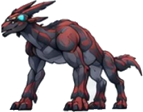
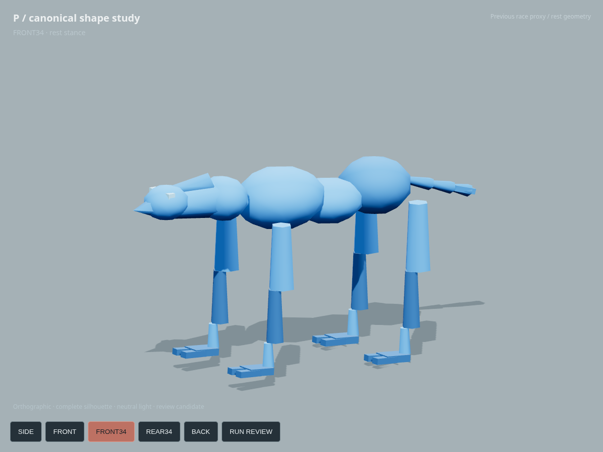
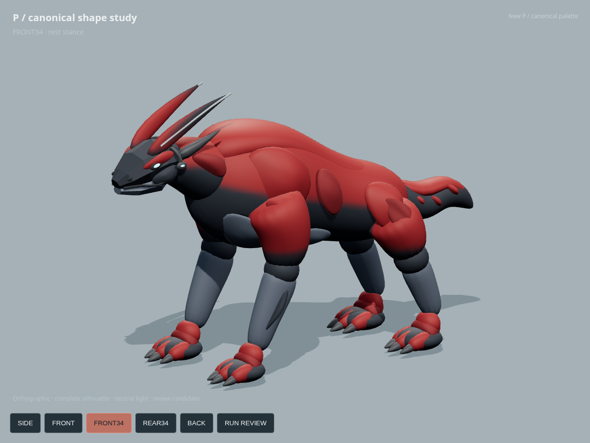
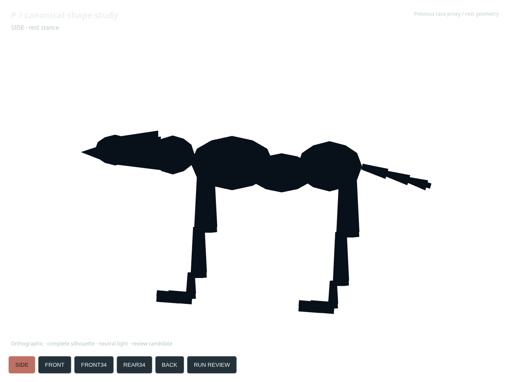
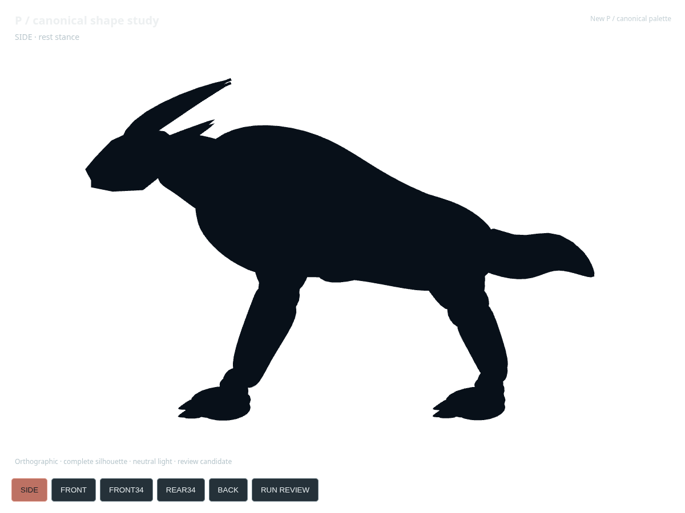

2026-10-11 · Same species, power morph · Full geometry rendered from the committed GLB



Visibly closer; keep for continued modeling review. A deep continuous chest, heavy shoulders/forelimbs, short thick neck, directional skull, swept crests, clawed feet and a heavy bent tail replace the primitive silhouette. Production promotion remains on hold.


Display-size check only.
Not an 18-runner race performance test.
Still mismatched: shoulder and elbow forms are too rounded; the skull is coarser than the painted design; the crest pair spacing, frontal/rear anatomy and tail folds are inferred. The reference's angular surface rhythm is not yet reproduced. The minimal running study exposes rigid joint deformation and is not a production gait pass.
Body-part changes, five-view renders, provenance, validation and limitations · Running review · Full canonical sheet